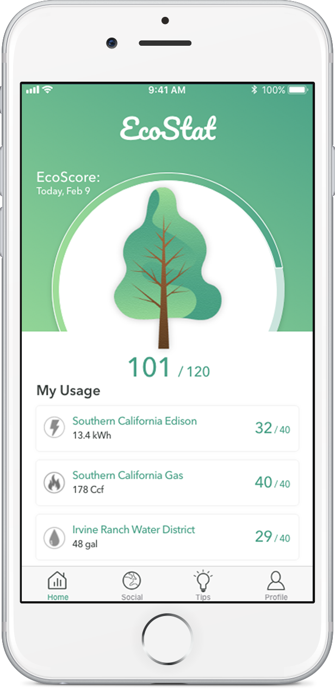
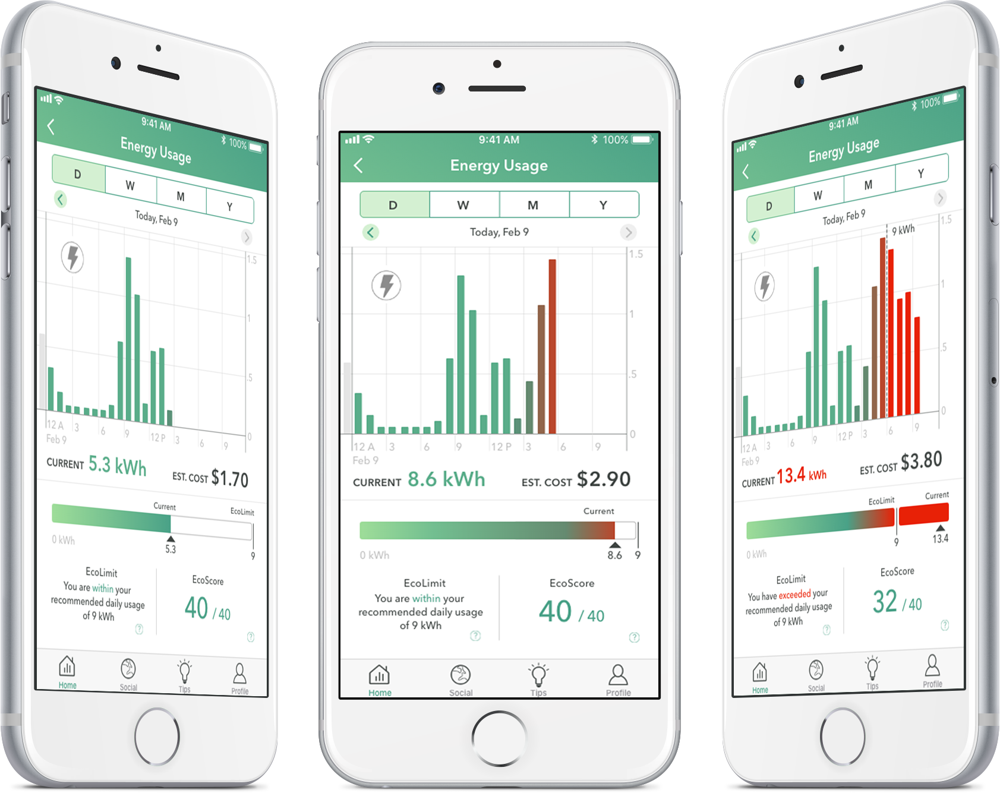
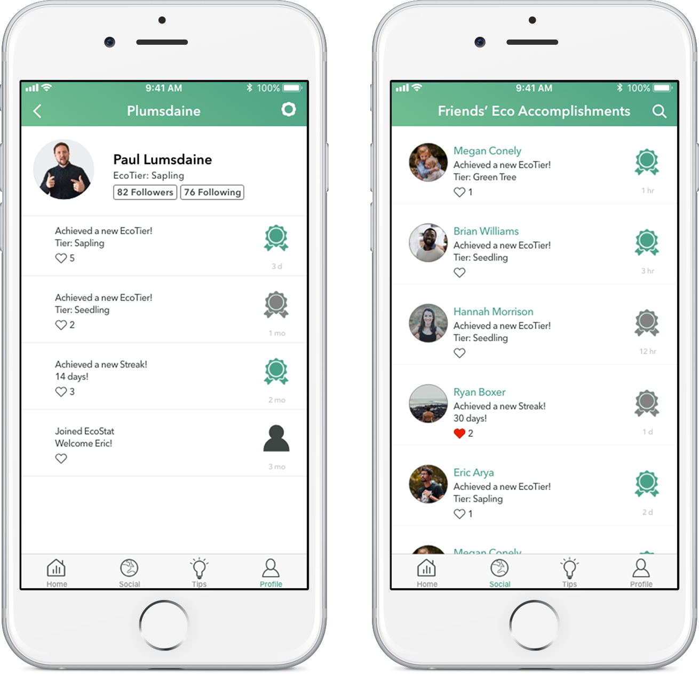
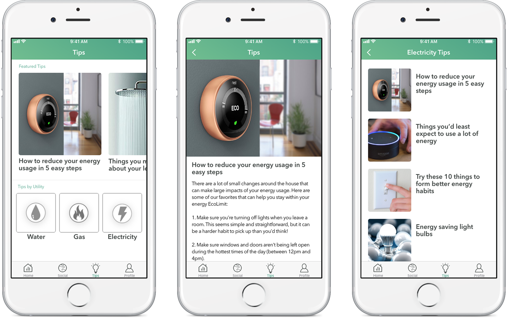
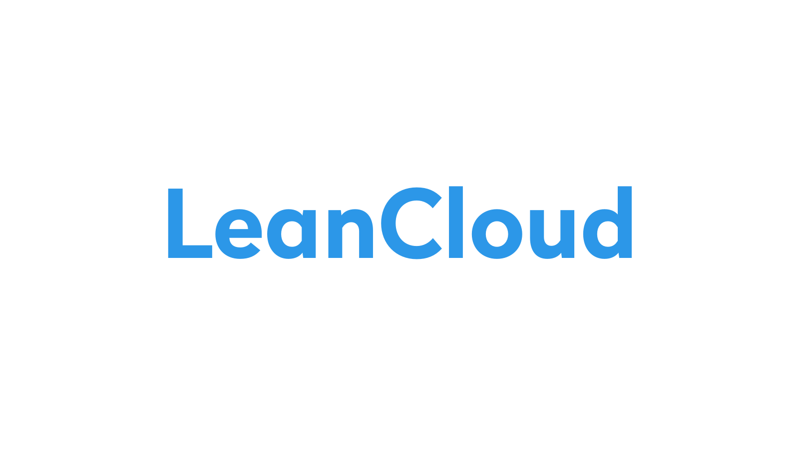

EcoStat
A web application that tracks environmental impact from home smart devices.
Project:
EcoStat - User Interaction Software Project
Team:
Team E’Conscious: Joseph Bustamante, John Shipley, Daniel Taghavi, Fuchen Shi, Linxuan Xi
Duration:
3 months(January 2019-March 2019)
Platform:
Web Mobile Application
Background
We were given the task of using a technology in order to solve a social issue.
Team E’Conscious chose the Internet of Things (IoT) devices to solve an aspect of climate change.
Problem Statement
There are people who want to help the planet by improving their utility usage (using less water,
turning off the lights, etc) however knowing how much they saved the planet is difficult
when reading the utility bills.
Utility bills do not have a consistent measurement system and most bills do not have
an indicator on being eco-friendly. Our application, EcoStat will help users understand
how much of an impact they have on the planet through the data collected from their IoT
devices and encourage them to be green through an eco-community.
Process
Comparative Analysis
With the idea of IoT devices helping users understand their utility usage, I conducted
a comparative analysis to know what similar products are available. We found a 3 direct
and 3 indirect competitors and compared the features.
The criteria was having a social aspect, connect to IoT devices, tips/suggestions,
track usage, and have a ranking system. We also compared all the products on their
user base, cost, whether it was a mobile application, and the problem they are
specifically addressing.
Although the majority of the competitors were created to allow the user to know their
impact on specific utilities, it did not allow users to connect IoT devices which would
provide an accurate usage number.
Survey
There were 13 questions on the survey which included short-responses,
checklists, yes/no questions, and linear scales. It was designed to gather demographics,
utility usage, and climate change behaviors of our participants. The survey was sent to
people we know and then they sent the survey to others. We made sure to send the survey
to people who pay utilities in order to catch our target audience. We also posted
the survey on a website temporarily.
The data measured the usability of a utility bill based on what features a
bill includes and how people feel towards it.
The majority of participants bills shows a breakdown of their usage over a given timespan.
However, only 20% of our participants know their impact on the environment based
on their bills.
Cognitive Walkthrough
We conducted our first usability test to test the layout of the user
interface and the functions that the app would have. Our users were given tasks to
browse for tips, view usage, link an IoT device and interact with a friend’s post.
From this iteration, we learned that our initial calendar tab(view usage) was not being
clicked on. Users were clicking on the utility icons instead to view each individual one.
It was redudant to have two calendars (in utility and tab) was redundant so we kept it to
one.
We also realized there wasn’t a way to search for friends so adding a search
bar was added to the agenda.
We needed a better visual to see utility limits being overused under each utility. Overall,
the prototype did not have all of the functions implemented which frustrated our testers.
In the next round of testing, we decided to have most of the functions working.

One of the main difficulties users have is understanding their impact on the environment.
The EcoScore is a representation of the usage. Each utiltiy starts at a score of 40
totaling up to 120 for all three. This score is compared to their ecolimit which is
the recommended daily usage.
As their usage increases, the score will lower causing the meter to lower and the tree
image to change.
EcoScores are reset to 40 and 120 at the end of each day.
EcoLimit

It’s hard knowing how much you go over on your utilities limit. Why not have an
easy ecolimit which allows users to visually see their usage for the day?
Users can view usage information for the day, month, and year through the horizontal
and bar graph.
As they get closer to their usage, the color on both graphs turn red and an
estimation of those costs appear.
Social Feed

Get connected with other users and celebrate your achievements and streaks! Users can
earn a new EcoTier when they have consistent scores.
Having a social feed allows users to keep each other accountable and motivated.
Tips

We found that the majority of our participants found their eco-friendly tips online.
The application displays articles found online to help users reduce their usage.
In the future, machine learning would be implemented in order to understand user’s
patterns to provide personalized suggestions.
Stack


